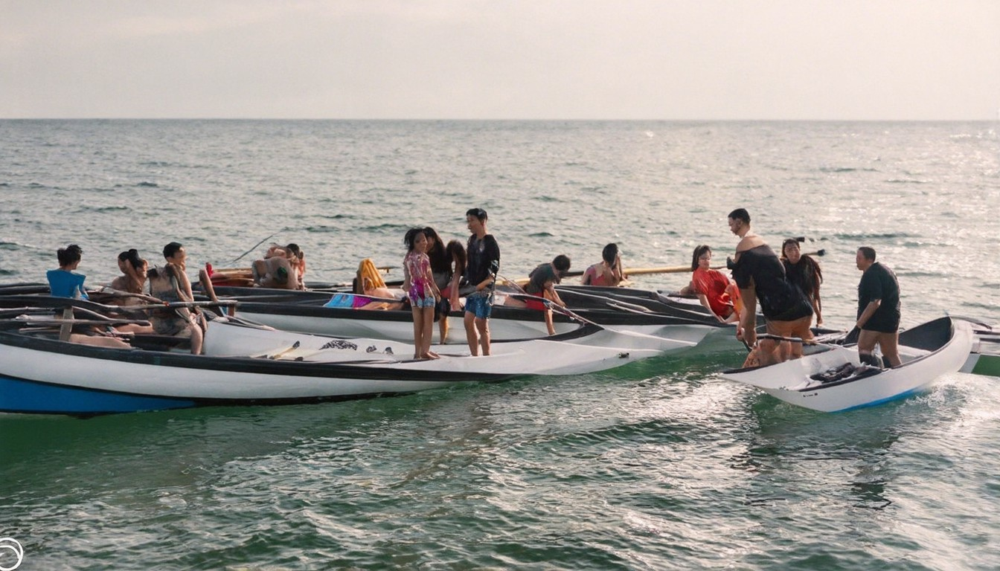
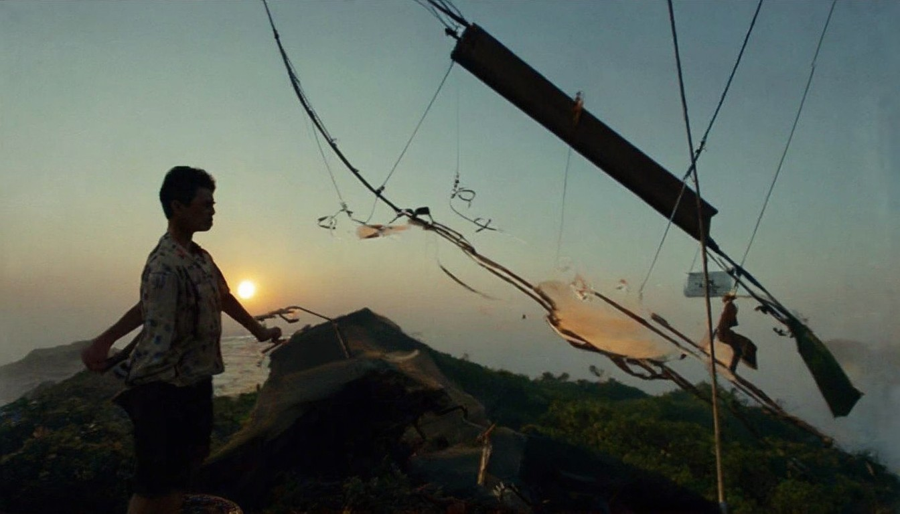
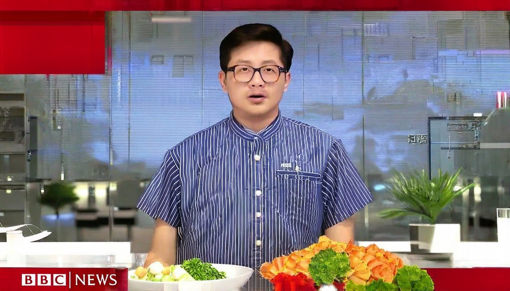

华尔街日报中文版2026年04月11日的文章列表
热门文章 · 从强硬到缓和：特朗普对华态度是如何逆转的 · 中东能源冲击终结中国通缩势头 · 伊朗军事损失惨重，为何仍自认是赢家？ · 特朗普发出涉伊关税威胁，中国产品或面临最大
2026年04月11日 · 全球热点速递
← 返回今日新闻热门文章 · 从强硬到缓和：特朗普对华态度是如何逆转的 · 中东能源冲击终结中国通缩势头 · 伊朗军事损失惨重，为何仍自认是赢家？ · 特朗普发出涉伊关税威胁，中国产品或面临最大

截至2026年4月初，当前国际形势总体呈现“冲突交织、多极并行、秩序重组、高不确定” 的复杂格局。核心特点是：地缘热点持续燃烧、经济复苏脆弱、科技与规则
# 【新聞直擊】美行動曝光 B2狂擲鑽地彈 直攻伊軍總指揮. 【新唐人北京時間2026年04月10日訊】今日焦點：出爾反爾？川普怒轟伊朗；密使談判前夕，美幽靈轟炸機鎖定伊朗36小時！雖遲但到，歐洲加入霍峽護航. 觀眾朋友好，歡迎收看《新聞直擊》。今天是4月10日，星期五。美國和以色列剛剛達成臨時停火協議，伊朗卻被指開始在霍爾木茲海峽收取通行費，引來川普強烈批評；另一邊，以色列一面持續空襲，一面準備
## [亞太裔女性薪資 印裔、台裔最高…比白男賺更多](https://www.worldjournal.com/wj/story/121473/9434604?from=wj_msg "亞太裔女性薪資 印裔、台裔最高…比白男賺更多"). [](https://www.worldjournal.com/wj/story/121475/94347
随着美伊停火维持，油价期货下跌、金融市场走高，内塔尼亚胡下令与黎巴嫩展开直接谈判 · 资料照片：黎巴嫩贝鲁特南郊遭以色列空袭后浓烟升起。(
[新闻](./?hl=zh-CN&gl=CN&ceid=CN%3Azh-Hans). [首页](./home?hl=zh-CN&gl=CN&ceid=CN%3Azh-Hans). [中国](./topics/CAAqJggKIiBDQkFTRWdvSkwyMHZNR1F3TlhjekVnVjZhQzFEVGlnQVAB?hl=zh-CN&gl=CN&ceid=CN%3Azh-Hans). [全球]
日本2026版外交蓝皮书针对目前的国际形势表述称：“被称为'后冷战时期'的相对稳定的时代已经终结”。对中国表述是“重要邻国”，此前为“最重要的双边关系之一”。针对伊朗发展

航空燃油成本翻倍 航班减少 旅客面临高票价航空燃油成本翻倍 航班减少 旅客面临高票价. 美智库：伊朗战争 中共助伊朗重建导弹计划美智库：伊朗战争 中共助伊朗重建导弹计划. 专家：中共设40天禁航区多重动机 国际须警惕专家：中共设40天禁航区多重动机 国际须警惕. 美国安专家：推立法 反制中共跨国迫害神韵美国安专家：推立法 反制中共跨国迫害神韵. 分析：中共因长和报复巴拿马 在拉美引反噬分析：中共因

*  ## [「鄭習會」：鄭麗文倡「制度性解決方案」，講話未畢直播被切斷](https://www.bbc.com/zhongwen/articles/
白宫接连换将内阁酝酿“大洗牌”？；曝五角大楼军官名单突变谁的晋升被按下暂停键？；伊朗境内生死营救美军飞行员如何险境脱身？；给民主党“帮大忙”？